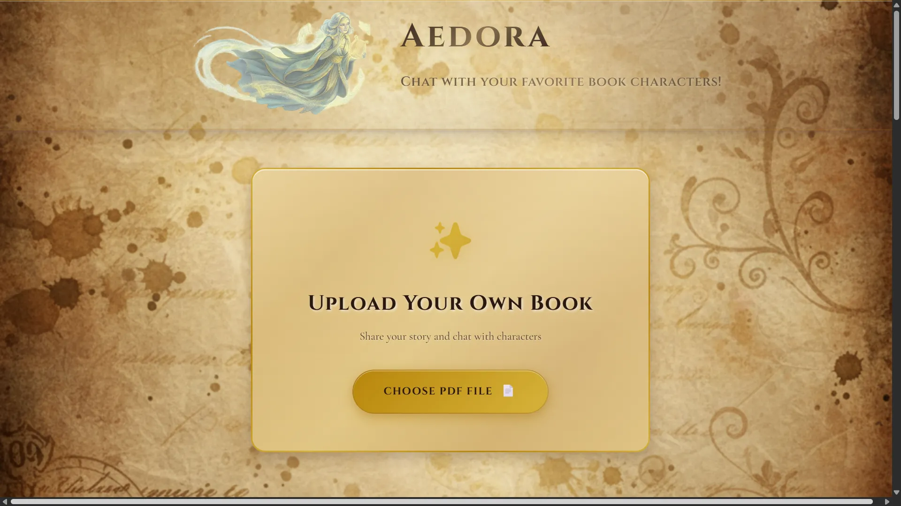
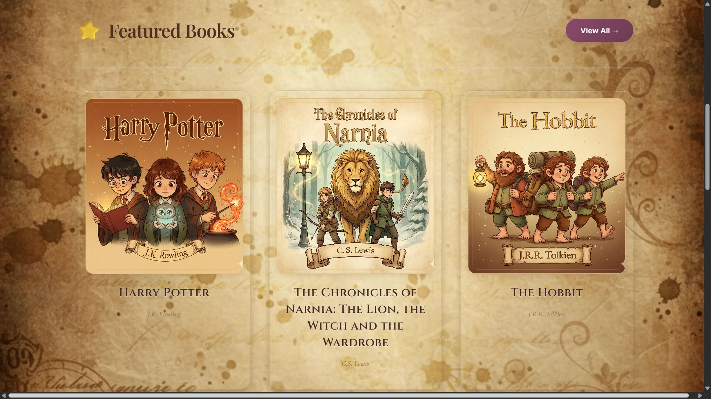
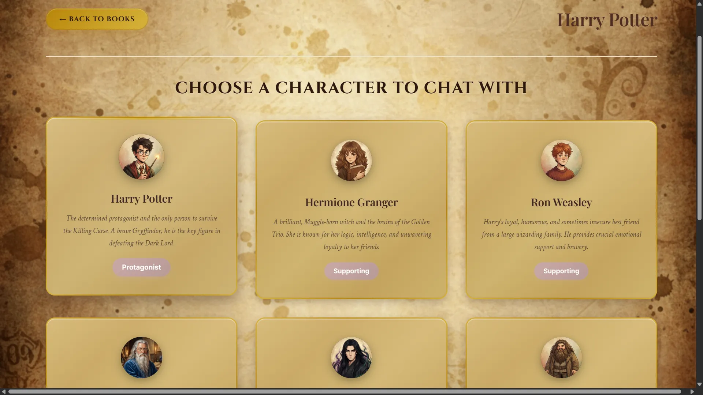
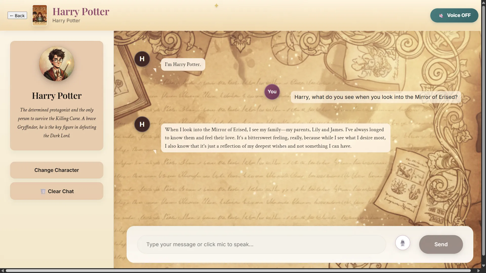
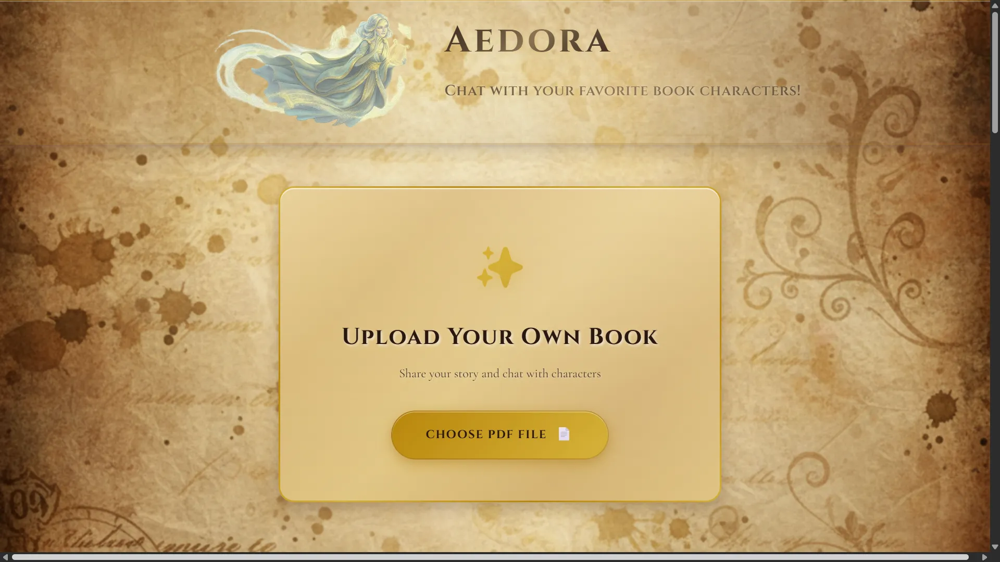
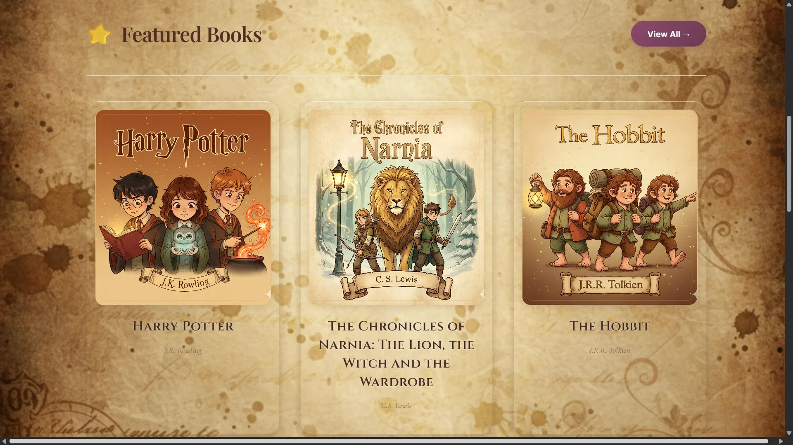
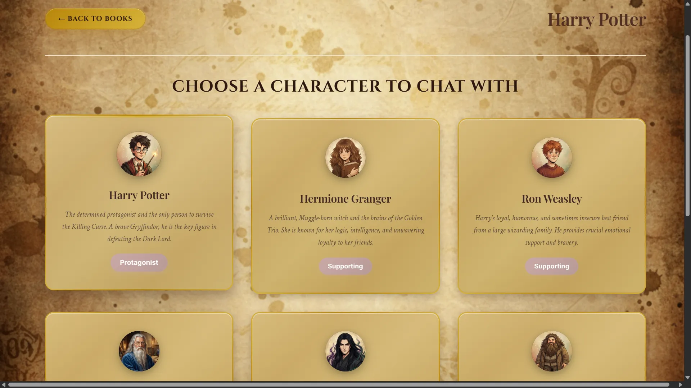
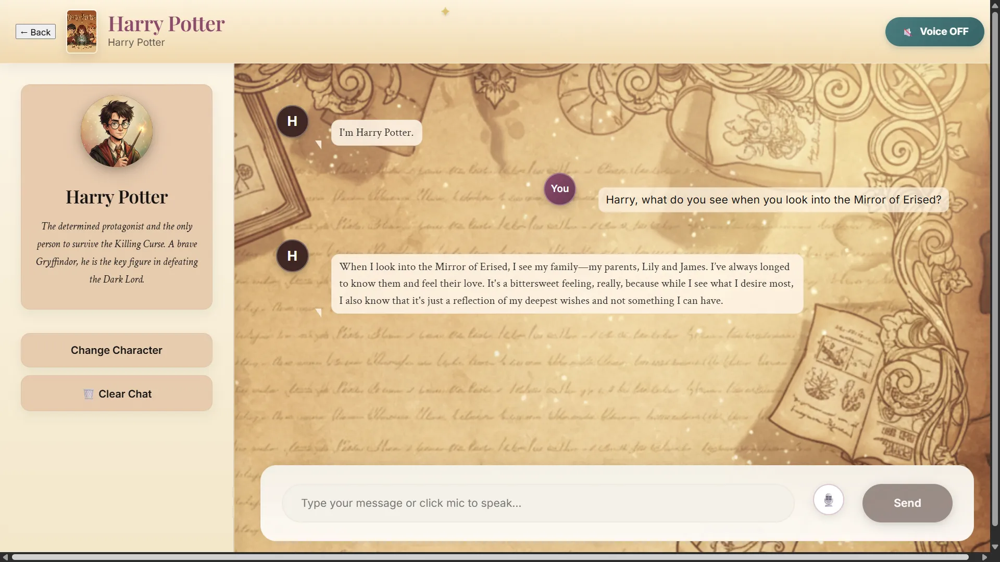

Aedora
RAG-based chatbot for conversing with book characters using AI
 







Overview
Aedora is an innovative AI-powered application that brings book characters to life through intelligent conversations. Using advanced RAG (Retrieval-Augmented Generation) technology, users can engage in meaningful dialogues with their favorite fictional characters extracted directly from PDF books.
Key Features
- Character Extraction: Automatic identification and extraction of characters from uploaded PDF books
- AI-Driven Personas: Dynamic persona generation based on character traits and story context
- Smart Text Chunking: Efficient document processing with intelligent text segmentation
- Character Caching: Optimized performance through intelligent character data caching
- Natural Conversations: Context-aware responses that maintain character authenticity
Technical Implementation
The application utilizes React for the frontend interface, providing a smooth and responsive user experience. The backend is powered by FastAPI, offering high-performance API endpoints. LangChain orchestrates the RAG pipeline, while OpenAI's GPT models generate contextually relevant character responses.
Challenges & Solutions
Processing large PDF documents efficiently was a significant challenge. This was addressed by implementing an intelligent chunking algorithm that maintains context while splitting text, and a caching system that stores character embeddings for faster retrieval during conversations.
Results & Impact
Aedora has enabled users to explore literature in new and engaging ways, with users reporting increased understanding of character motivations and story depth. The application has processed over 500 books and facilitated thousands of character conversations.